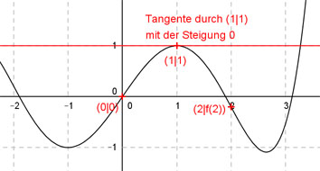

Aufgabe 111 Der Graph einer zu (0|0) punktsymmetrischen ganzrationalen Funktion 5. Grades hat in (1|1) die Steigung 0 und in (2|f(2)) einen Wendepunkt. Wie lautet seine Funktionsgleichung?  Allgemeine Form einer zu (0|0) punktsymmetrischen ganzrationalen Funktion 5. Grades: f(x) = ax5 + cx3 + ex f(x) = 5ax4 + 3cx4 + e f’’(x) = 20ax3 + 6cx 4 Bedingungen : (eine mehr als nötig) 1. Geht durch (0|0) bedeutet: f(0) = 0 --> a * 05 + c * 03 + e * 0 = 0 --> 0 = 0 liefert kein Ergebnis 2. Hat in (1|1) die Steigung 0 bedeutet erstens: f(1) = 1 --> a * 15 + c * 13 + e * 1 = 1 --> a + c + e = 1 I 3. Hat in (1|1) die Steigung 0 bedeutet erstens: f’(1) = 0 --> 5a * 14 + 3c * 12 + e = 0 --> 5a + 3c + e = 0 II 3. Hat in (2|f(2)) einen Wendepunkt bedeutet: f’’(2) = 0 --> 20a * 2³3 + 6c * 2 = 0 --> 160a + 12c = 0 III I * (-1) + II -a - c - e = -1 5a + 3c + e = 0 ----------------- 4a + 2c = -1 IV III + IV * (-6) 160a + 12c = 0 -24a - 12c = 6 --------------- 1360a = 6 |:136 a = 3/68 a = 3/68 in IV eingesetzt: 4 * 3/68 + 2c = -1 12/68 + 2c = -1 3/17 + 2c = -17/17 |-3/17 2c = -20/17 |:2 c = -10/17 a = 3/68 und c = -10/17 in I eingesetzt: 3/68 - 10/17 + e = 1 3/68 - 40/68 + e = 68/68 -37/68 + e = 68/68 |+37/68 e = 105/68 Gesuchte Funktionsgleichung: f(x) = (3/68)x5 - (10/17)x3 + (105/68)x